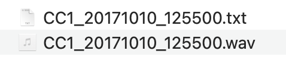
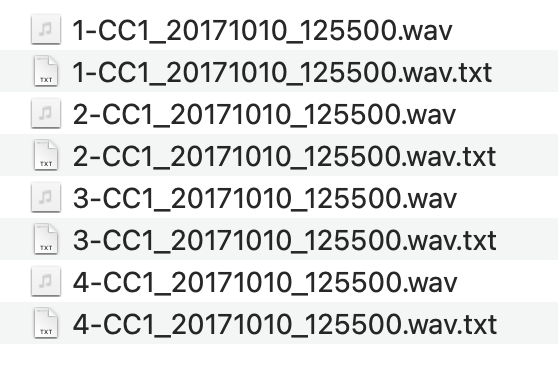

Andrew Schwenke 29 October 2022
This is a small example workflow using the
warbleR and
Rraven packages. It takes a
WAVE file and Raven selection table as input, and returns one WAVE file
(.wav) for each selection, as well as one Raven selection table
(.txt file) per selection. The practice data (CC1_20171010_125500.wav)
is an audio recording taken at Cedar Creek, south-east Queensland,
Australia, and released by Andrew Schwenke under a CC BY 4.0 license.
Input:

Output:

Prepare the data
library(warbleR)
library(Rraven)
library(dplyr)
# with no file tag added, set name from file to true, and provide upper or lower WAV extension format
rvn.dat.1 <-
imp_raven(
all.data = TRUE,
path = "data/typical/",
name.from.file = TRUE,
ext.case = "lower"
)
# rename columns to use with warbler
rvn.dat.2 <-
rvn.dat.1 %>%
dplyr::rename(
selec = Selection,
start = `Begin Time (s)`,
end = `End Time (s)`
)
# generate a selection table
rvn.dat.st <- selection_table(rvn.dat.2, path = "data/typical/")
## checking selections (step 1 of 2):
check_sels(rvn.dat.st, path = "data/typical/")
## all selections are OK
Generate segmented WAVE files
Margin is the time in seconds to add to generated WAVE files before/after each selection. Margin = 0 would generate WAVEs that are exactly the length of the selection annotations.
margin <- 2
cut_sels(
X = rvn.dat.st,
path = "data/typical/",
mar = margin,
dest.path = "output/cuts/typical"
)
# check if Delta time (s) exists
# create if it doesn't
# modify data frame to reflect what will be the new start and end times for each selection when the WAVE is split
if(!"Delta Time (s)" %in% colnames(rvn.dat.2))
{
rvn.dat.3 <-
rvn.dat.2 %>% dplyr::mutate(`Delta Time (s)` = end - start)
rvn.dat.4 <-
rvn.dat.3 %>% dplyr::mutate(start = 0 + margin,
end = (start + `Delta Time (s)`))
} else {
rvn.dat.4 <-
rvn.dat.2 %>% dplyr::mutate(start = 0 + margin,
end = (start + `Delta Time (s)`))
}
Generate individual selection tables for each cut WAVE
# list the cut WAVE files you generated
cut_wavs <-
list.files(path = "output/cuts/typical/", pattern = ".wav")
# generate selection tables
for (x in 1:length(rvn.dat.4$selec)){
exp_raven(X = rvn.dat.4[x,], path = "output/cuts/typical/", file.name = cut_wavs[x])
}